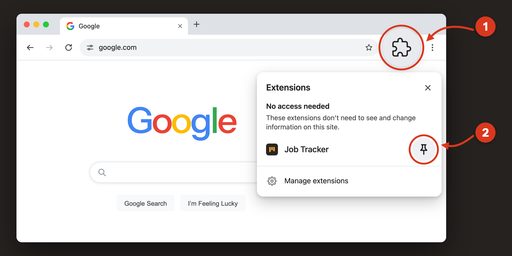
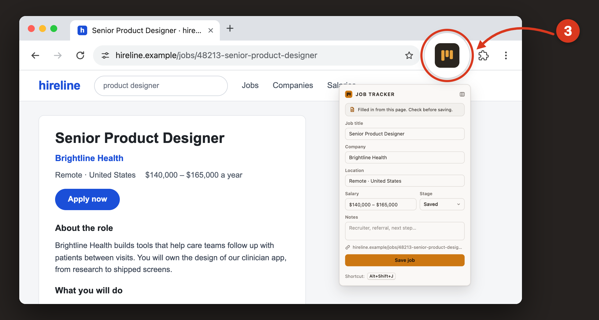

Chrome hides new extensions behind the puzzle icon, so pin Job Tracker first.

On your first click, a short “How it works” screen opens. Click Got it, then check the details and click Save job.

No account needed. Your jobs are stored only in this browser.